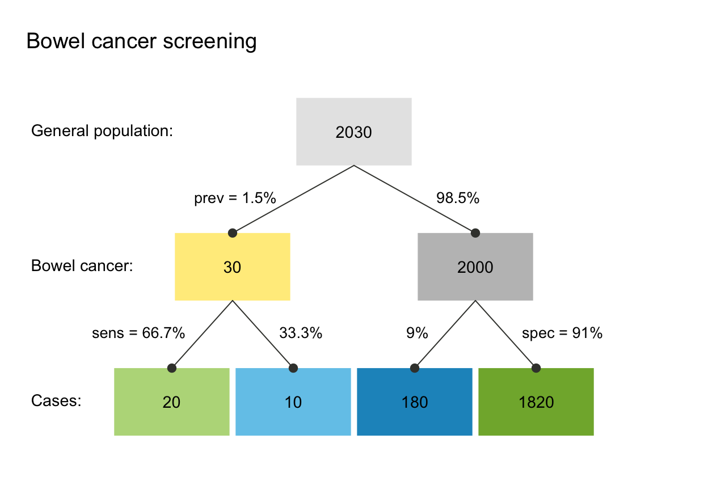
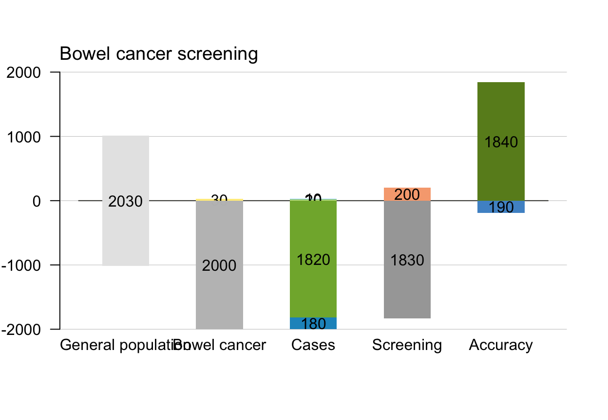

plot.riskyr is a method that allows to generate
different plot types from a "riskyr" object.
# S3 method for riskyr plot(x = NULL, type = "prism", ...)
Arguments
| x | An object of class "riskyr", usually a result of a call to |
|---|---|
| type | The type of plot to be generated. The following plot types are currently available:
|
| ... | Additional parameters to be passed to the underlying plotting functions. |
Details
plot.riskyr also uses the text settings
specified in the "riskyr" object.
See also
riskyr initializes a riskyr scenario.
Other visualization functions:
plot_area(),
plot_bar(),
plot_curve(),
plot_fnet(),
plot_icons(),
plot_mosaic(),
plot_plane(),
plot_prism(),
plot_tab(),
plot_tree()
Other riskyr scenario functions:
read_popu(),
riskyr(),
summary.riskyr()
Examples
# Select a scenario (from list of scenarios): s1 <- scenarios$n1 # select scenario 1 from scenarios plot(s1) # default plot (type = "prism")#>